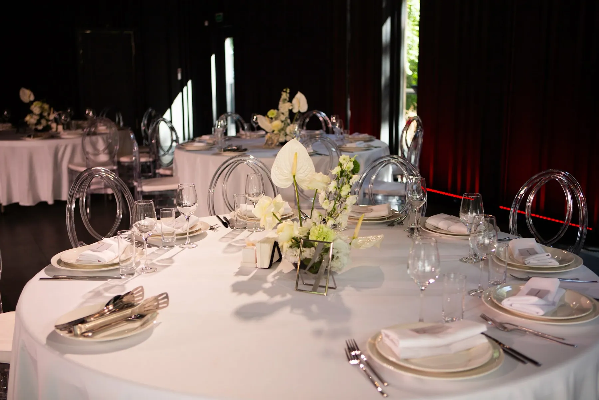
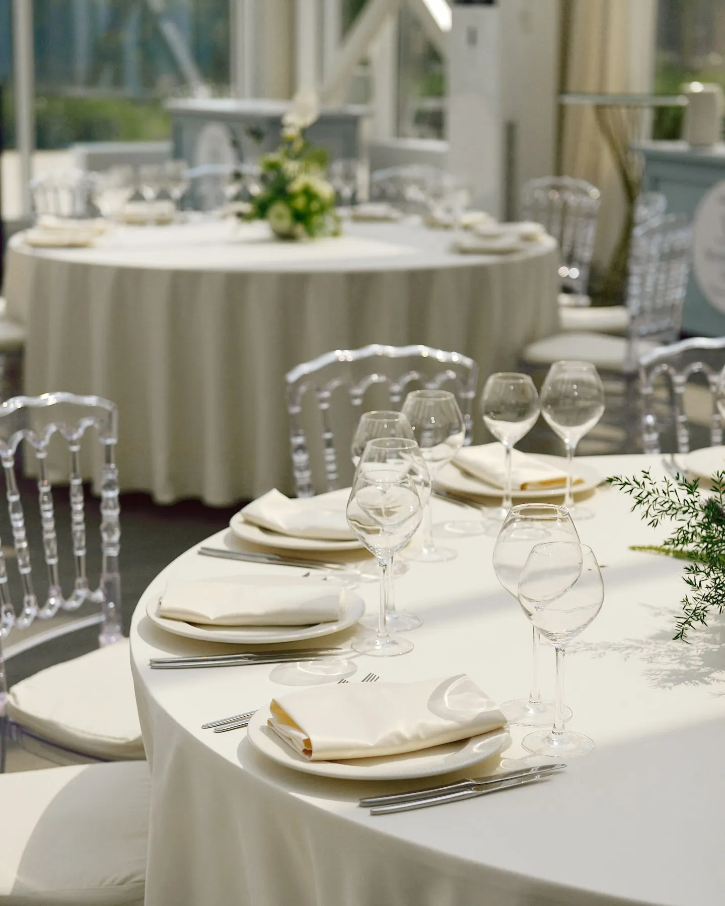

Ресторан — это уже готовый интерьер: стены, свет, мебель и сервис. Задача декора — не спорить с ним, а добавить то, что делает зал вашим. Рассказываем, что обычно оформляют в ресторане и о чём договориться заранее.
Начните с интерьера
Посмотрите на зал глазами декоратора: цвет стен, пол, мебель, люстры, окна. Эти элементы нельзя изменить, поэтому палитру подбирают под них. Если зал светлый, выдержит и яркие цвета; тёмный лучше раскрывается в контрасте, например белые цветы на тёмном фоне, как в свадьбе «Белые цветы в тёмном зале». Подробнее — в статье про цвет свадьбы.

О чём договориться с рестораном
- Подрядчики. Можно ли привлекать внешнего декоратора и есть ли требования к нему.
- Время монтажа. Когда можно зайти в зал и сколько часов на сборку.
- Крепления и конструкции. Можно ли подвешивать декор к потолку и стенам.
- Открытый огонь. Допускаются ли свечи и как их размещать.
- Что входит в аренду. Скатерти, посуда, стулья, номерки столов — чтобы не дублировать.
- Расстановка. Схема столов и проходы для официантов.
Что оформлять в первую очередь
В готовом ресторане лучше выбрать несколько ключевых зон: президиум — подробнее в статье про оформление президиума, вход и велком-зону — в статье про велком-зону, фотозону и гостевые столы. О том, как оформить зал и банкет, — в статьях про оформление банкета и про оформление зала.
Совет: пришлите декоратору фото зала, схему столов и информацию об аренде — это сразу сужает варианты и экономит время.

Как заказать
Расскажите о ресторане, дате и количестве гостей — предложим оформление под ваш зал и посчитаем смету.
Частые вопросы
Можно ли привлечь декоратора, если ресторан предлагает свой декор?
Часто да, но условия нужно уточнить у ресторана заранее: допуск подрядчиков, время монтажа, правила.
Что оформлять, если бюджет ограничен?
Президиум, фотозону и вход. Гостевые столы можно сделать лаконичными в той же палитре.
Можно ли использовать свечи в ресторане?
Это зависит от правил заведения. Согласуйте заранее и используйте стеклянные подсвечники.